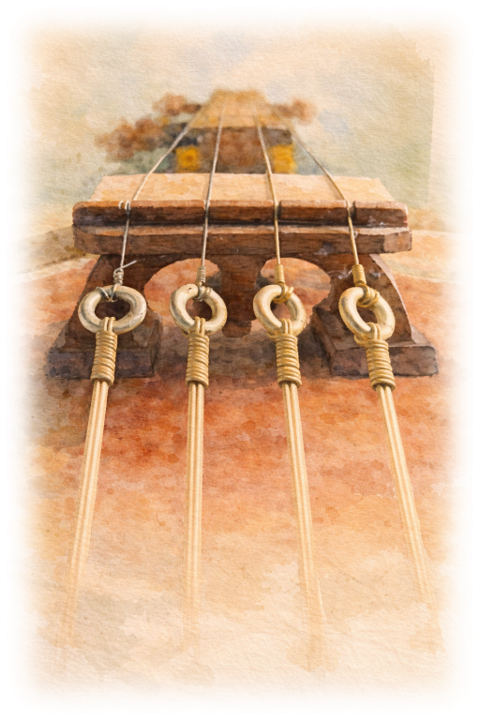
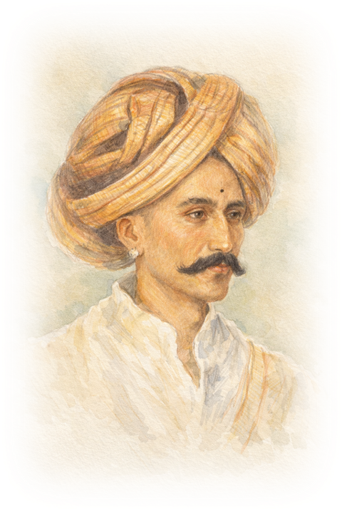
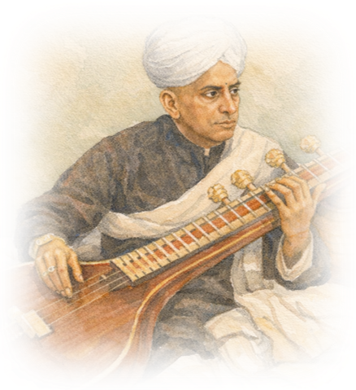
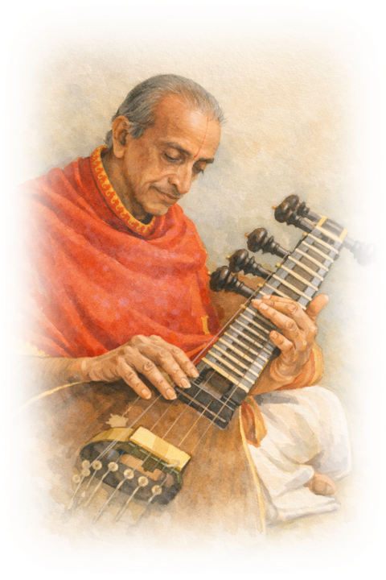

The Lineage
The vīṇā tradition of Mysore is rooted in a deeper Carnatic continuum that flows from Pacchimiriam Adiappayya, the eighteenth-century composer whose work shaped the grammar of South Indian classical music. Remembered most widely for the Bhairavi āṭa tāḷa varṇam Viriboni, which remains foundational to Carnatic pedagogy, Adiappayya stands at the source of a lineage marked by clarity, proportion, and architectural balance.
Vīṇe Śeṣanna, one of the foremost figures in the history of the vīṇā, belonged to this lineage as a descendant of Pacchimiriam Adiappayya. His musical formation was further shaped through formal vocal training under Mysore Sadāśiva Rao, a distinguished musician of the Tyāgarāja tradition, descending through Walajapet Venkataramana Bhagavatar, the foremost disciple and chronicler of Tyāgarāja's musical legacy.
In Śeṣanna, what had long lived in the human voice found a new and unforced channel in strings—not as an echo of the vocal cords, but as a thoughtful emulation by the vīṇā strings, singing within their own vādyā dharma, while preserving the grace of the voice. Through him, the Mysore bāṇi of vīṇā playing took its definitive shape.
The style that emerged was marked by repose rather than urgency, proportion rather than emphasis, and clarity rather than display. Sound was allowed to unfold at its own pace, shaped by restraint and inner balance. This was not a tradition preserved through doctrine or notation, but one sustained through touch, repetition, and time.
From Śeṣanna, the lineage flowed through Veene Venkatagiriyappa, to Mysore V. Doreswamy Iyengar, and onward to Vidvān D. Balakrishna. Across generations, the essence has remained intact—not as a fixed form, but as a living continuity, sustained by practice rather than proclamation.
Born in Mysore in 1852 into a lineage descending from Pachimiriam Adiappaiah, Veene Seshanna grew in a world where music was discipline, craft, and daily breath. Trained by his father and senior vidwans of the Tyagaraja lineage, he served as Asthāna Vidwān to three generations of Wodeyar rulers and was honoured by Nalvadi Krishnaraja Wodeyar IV with the title Vainika Śikhāmaṇi.
He gave the veena its now-familiar horizontal repose, opening the way for deeper resonance, rich gamaka, and unhurried raga development—hallmarks of the Mysore bāṇi. His compositions, especially the tillānās, and his teaching shaped a living tradition carried forward through Venkatagiriyappa, Mysore V. Doreswamy Iyengar, and today, Vidwan D. Balakrishna.
This music, firm in structure yet gentle in touch, steadies the listener and refines attention. In that quiet authority, the lineage continues—not as preserved form alone, but as a cultivated way of hearing and being.
Born in 1887 in the Mysore region and trained first within his family, Veene Venkatagiriyappa came under the direct tutelage of Veene Seshanna, from whom he absorbed the full depth and discipline of the Mysore veena tradition. Rising to serve as Asthāna Vidwān in the Wodeyar court, he combined rigorous classical grounding with wide musical exposure, and became a central figure in both performance and pedagogy within Mysore's cultural life.
His playing preserved the unhurried raga development, firm left-hand clarity, and balanced right-hand articulation that define the Mysore bāṇi, while his curiosity led him to explore new forms, including instrumental naghmas and compositions shaped by broader musical contact. As a teacher of rare patience and precision, he shaped a generation of eminent vainikas, foremost among them Mysore V. Doreswamy Iyengar, through whom the lineage flows today to Vidwan D. Balakrishna.
In Venkatagiriyappa's music, tradition and openness moved together—rooted, yet never rigid—leaving behind a style that refines the ear, steadies the mind, and keeps the veena both dignified and alive.
Born in 1920 into a family steeped in devotional and instrumental music, Mysore V. Doreswamy Iyengar received his earliest training from his father and later became the foremost disciple of Veene Venkatagiriyappa, inheriting the full classical discipline of the Mysore veena tradition. A prodigy who debuted at the Mysore Palace in childhood, he was appointed Asthāna Vidwān at a remarkably young age, and soon came to represent the very sound of the courtly Mysore style on national and international stages.
His playing was marked by unamplified purity of tone, deep raga immersion, and seamless left-hand continuity, allowing the veena to speak with instrumental clarity and architectural poise. While rooted firmly in tradition, he remained open to thoughtful exploration—collaborating across systems, composing for dance and theatre, and shaping broadcast formats that brought classical music to wider audiences, without ever compromising raga dignity.
As a teacher, he passed the Mysore bāṇi to his son D. Balakrishna with the same rigor and patience he had received, ensuring that lineage remained not a relic of the past but a living presence—refined, unhurried, and architecturally sound.